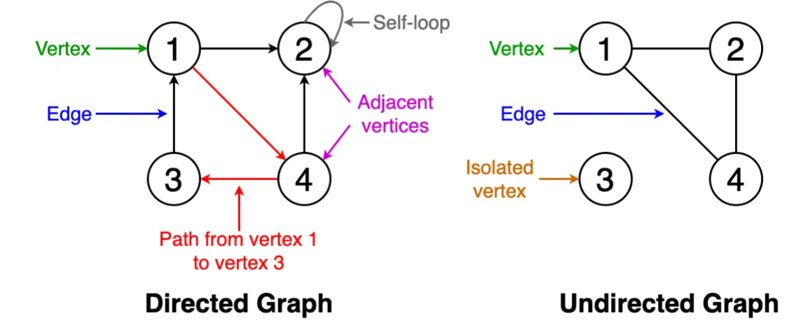
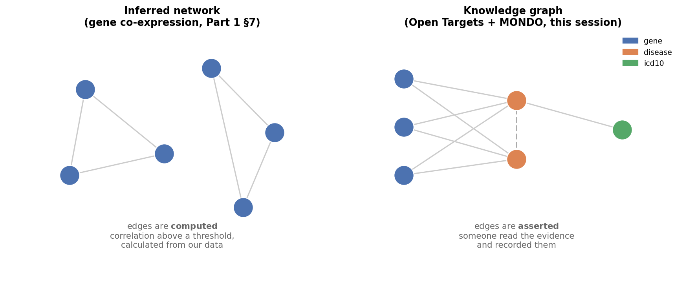
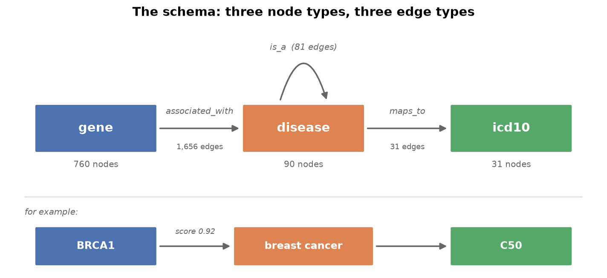

Part 1 — What is a Network, and What is a Knowledge Graph?#
This notebook covers the vocabulary for the rest of the day. It is deliberately light on code: the point is to be able to look at a biological question and say what the nodes are, what the edges are, and where the edges came from — because that last question turns out to matter more than anything else.
We then meet the specific knowledge graph used in Sessions 1, 3 and 4: a breast-cancer-focused graph built from Open Targets and the MONDO Disease Ontology.
Learning objectives#
By the end of this notebook we will be able to:
Name the parts of a graph: vertex, edge, degree, path, component.
Distinguish a directed from an undirected graph, and say why it matters here.
Build a small graph by hand in NetworkX and inspect it.
Explain the difference between an inferred network and a curated knowledge graph.
Build one of each over the same 737 genes, and say why they disagree.
Say what makes a graph a knowledge graph: typed nodes, typed edges, and provenance.
Describe where our data comes from and under what licence.
1. Networks, in the smallest possible terms#
A network (or graph) is two things:
a set of vertices (also called nodes) — the objects
a set of edges — the pairs of objects that are related
That is all. Everything else is vocabulary built on top:
Term |
Meaning |
|---|---|
Degree |
How many edges a node has. A high-degree node is a hub. |
Path |
A sequence of edges we can follow from one node to another. |
Component |
A group of nodes all reachable from each other. |
Self-loop |
An edge from a node to itself. |
Isolated vertex |
A node with no edges at all. |
Directed |
Edges have a direction (A → B is not B → A). |
Undirected |
Edges are symmetric (A — B). |

Diagram reused from earlier gene co-expression network teaching material.
Why directedness matters for us#
It is tempting to treat this as a technicality. It is not. Our graph contains edges like:
triple-negative breast carcinomais_abreast carcinoma
That is emphatically not symmetric — every triple-negative breast carcinoma is a breast carcinoma, but not the reverse. If we throw the direction away we can still draw the graph, but we can no longer climb it, and climbing it is exactly what we do in Part 3.
We will mostly work undirected, because degree, hubs and components are more intuitive that way, and keep the direction as an edge attribute so nothing is lost.
2. Building a graph by hand#
Before loading anything real, here is the whole NetworkX API we need.
# ── Imports ──────────────────────────────────────────────────────────────────
import networkx as nx
import matplotlib.pyplot as plt
# A graph starts empty.
G = nx.Graph()
# Nodes can carry arbitrary attributes - here, what kind of thing the node is.
G.add_node("BRCA1", type="gene")
G.add_node("BRCA2", type="gene")
G.add_node("breast cancer", type="disease")
G.add_node("ovarian cancer", type="disease")
# Edges can carry attributes too. `weight` is just a name; it has no special
# meaning to NetworkX beyond a few algorithms that look for it by default.
G.add_edge("BRCA1", "breast cancer", type="associated_with", weight=0.92)
G.add_edge("BRCA2", "breast cancer", type="associated_with", weight=0.89)
G.add_edge("BRCA1", "ovarian cancer", type="associated_with", weight=0.85)
print(G)
Graph with 4 nodes and 3 edges
# Degree: how many edges each node has.
for node, degree in sorted(G.degree(), key=lambda x: -x[1]):
print(f"{node:16s} degree={degree} type={G.nodes[node]['type']}")
BRCA1 degree=2 type=gene
breast cancer degree=2 type=disease
BRCA2 degree=1 type=gene
ovarian cancer degree=1 type=disease
Notice that ovarian cancer has degree 1 and BRCA1 has degree 2. In a graph this
small that is trivia. In a graph of 100,000 nodes, degree is the first thing we
look at — it tells us which entities the underlying literature has paid attention
to. Keep that phrasing in mind: degree measures attention, not importance.
# Neighbours and paths - the two operations that make a graph useful.
print("Neighbours of BRCA1:", list(G.neighbors("BRCA1")))
print("Path from ovarian cancer to BRCA2:",
nx.shortest_path(G, "ovarian cancer", "BRCA2"))
Neighbours of BRCA1: ['breast cancer', 'ovarian cancer']
Path from ovarian cancer to BRCA2: ['ovarian cancer', 'BRCA1', 'breast cancer', 'BRCA2']
That path — ovarian cancer → BRCA1 → breast cancer → BRCA2 — is a tiny example
of the thing this whole day is building towards. Nobody recorded a fact linking
ovarian cancer to BRCA2 directly. The graph produced it by composition.
That is what a knowledge graph is for: answering questions nobody explicitly stored the answer to.
3. Two very different ways to get a network#
Both of the pictures below are networks. They are built from opposite directions, and confusing them is the most common mistake in this field.

Inferred networks are computed from measurements. In gene co-expression work we take a gene expression matrix, correlate every gene against every other gene, and draw an edge wherever the correlation clears a threshold. The edges are a statistical claim about our data.
One node type (genes, or patients).
Edge weights are correlations.
Change the threshold and we get a different network. There is no “true” one.
The network can contain relationships nobody has ever described before. That is the point of building it — it is a hypothesis generator.
Curated knowledge graphs are read out of a database of recorded facts. Somebody asserted that this gene is associated with that disease, and the graph records it.
Several node types (genes, diseases, drugs, phenotypes, codes…).
Edges are typed: this kind of relationship, not just “related”.
Edges carry provenance: which study, which database, how much evidence.
The graph can only contain what somebody already knew. It is a knowledge retrieval structure, not a discovery one.
A knowledge graph is often described as a specialised class of network, and that is exactly right — the specialisation is those three bullets. Section 7 builds both kinds over the same genes so the specialisation is something we can see rather than something we are told.
Who is the “somebody”?#
Usually a curator — a biologist employed by a database to read the published literature and turn its findings into structured entries a computer can use. Reading a paper that reports a BRCA1 mutation in a breast cancer family, and writing a row that says gene BRCA1, disease breast cancer, evidence PMID 12345, is curation. The word covers automated sources too: text-mining pipelines and genome-wide association studies contribute entries the same way.
The consequence matters more than the definition. Every edge exists because a person or a pipeline put it there — which is why a knowledge graph can only ever tell us what has already been written down.
Why does this distinction matter so much? (click to expand)
Because the two answer different questions, and the failure modes are opposite.
If we ask an inferred network “are these two genes related?” and it says yes, the risk is that the correlation is an artefact — batch effect, cell-type composition, a confounder.
If we ask a curated knowledge graph the same question and it says no, the risk is completely different: the absence of an edge does not mean the absence of a relationship. It very often means nobody has looked yet.
We see this concretely in Part 2, where the disease with the most genes in our graph is not the most important disease — it is the most studied one. And in Part 3, where a major breast cancer subtype turns out to have no gene associations at all, not because it has no genes, but because the evidence was filed under a different name.
An inferred network is biased towards what we measured. A knowledge graph is biased towards what somebody published. Neither bias is fixable by better code.
4. What makes it a knowledge graph#
A plain graph says A relates to B. A knowledge graph says who A and B are, how they relate, and on what basis we should believe it.
In practice that means three things:
Typed nodes — every node declares what kind of entity it is.
Typed edges — every edge declares what kind of relationship it is.
Provenance — the edge carries evidence: a score, a source, a count.
That third one is easy to nod along to and hard to take seriously. We take it seriously in Part 3, where the kind of evidence behind an edge turns out to decide whether the edge means what we think it means.
Here is the schema of the graph we will use all day:

Three node types and three edge types:
Edge type |
From → To |
Meaning |
Weighted? |
|---|---|---|---|
|
gene → disease |
This gene is implicated in this disease |
Yes — an Open Targets association score, 0–1 |
|
disease → disease |
This disease is a subtype of that one |
No |
|
disease → icd10 |
This disease corresponds to this clinical billing code |
No |
The is_a edges are what make this an ontology-backed graph rather than a flat
one, and they do a lot of work in Part 3.
5. Where the data comes from#
Two public sources, both redistributable, which is why they can ship inside this teaching repository.
Open Targets Platform#
A drug-target discovery platform that aggregates gene–disease evidence from genetics, somatic mutations, drugs, pathways, RNA expression and the literature. We take three things from it:
Gene entities — Ensembl gene IDs and their approved symbols.
Disease entities and the ontology hierarchy — the
is_astructure.Association scores — a 0–1 summary of how much evidence links a gene to a disease.
Licence: CC0 1.0 — public domain. Data downloads: https://platform.opentargets.org/downloads
MONDO Disease Ontology#
A unified disease ontology that merges several older vocabularies and, crucially for us, records cross-references to other coding systems — including ICD-10.
Licence: CC BY 4.0 — attribution required.
Mapping file: mondo.sssom.tsv
Why not DisGeNET?#
It is the obvious third option and it appears in a lot of papers. As of 2024 it moved to commercial licensing: the free academic licence does not permit downloading the full database, and requires per-user registration with roughly a week’s approval. That makes it impossible to ship in a public teaching repo.
One design decision worth flagging#
Open Targets keys genes by Ensembl gene ID (ENSG00000012048), which is the
same identifier space as the TCGA-BRCA transcriptomics matrix used in Session 2.
That is not a coincidence — it was chosen for it. It means a gene list produced by the multi-omics work in Session 2 can be looked up in this graph directly, without a symbol-mapping step that would silently lose 10–20% of the genes. We use that bridge at the end of Part 3.
(There is still one gotcha in that join, which we hit and fix in Part 3.)
6. The data files#
The graph ships as four small files in ../../data/session-1-data/, generated by the developer
scripts in data-prep/ — build_kg_data.py downloads about 1.1 GB from Open
Targets and cuts it down, and build_coexpression_data.py subsets the workshop
expression matrix. We do not need to run either.
File |
Contents |
|---|---|
|
|
|
|
|
the same gene–disease edges split by kind of evidence |
|
MONDO id → ICD-10 code and label |
|
500 patients × 737 genes of TCGA-BRCA expression, for Section 7 |
A first look:
import pandas as pd
nodes = pd.read_csv("../../data/session-1-data/kg_nodes.csv")
edges = pd.read_csv("../../data/session-1-data/kg_edges.csv")
print(f"{len(nodes):,} nodes, {len(edges):,} edges\n")
display(nodes.head())
display(edges.head())
881 nodes, 1,768 edges
| id | type | name | extra | |
|---|---|---|---|---|
| 0 | EFO_0009443 | disease | BRCAX breast cancer | OTAR_0000017; MONDO_0045024 |
| 1 | EFO_0009649 | disease | susceptibility to breast cancer | OTAR_0000017; MONDO_0045024 |
| 2 | EFO_0009782 | disease | progesterone-receptor positive breast cancer | OTAR_0000017; MONDO_0045024 |
| 3 | EFO_0022984 | disease | bilateral breast cancer | OTAR_0000017; MONDO_0045024 |
| 4 | MONDO_0000552 | disease | breast lobular carcinoma | MONDO_0002051; MONDO_0045024; OTAR_0000017 |
| source | target | type | weight | evidence | |
|---|---|---|---|---|---|
| 0 | EFO_0009443 | MONDO_0004989 | is_a | NaN | NaN |
| 1 | EFO_0009649 | MONDO_0004989 | is_a | NaN | NaN |
| 2 | EFO_0009782 | MONDO_0004989 | is_a | NaN | NaN |
| 3 | EFO_0022984 | MONDO_0007254 | is_a | NaN | NaN |
| 4 | MONDO_0000552 | MONDO_0004988 | is_a | NaN | NaN |
# What is actually in there?
print("Node types:")
print(nodes["type"].value_counts().to_string())
print("\nEdge types:")
print(edges["type"].value_counts().to_string())
Node types:
type
gene 760
disease 90
icd10 31
Edge types:
type
associated_with 1656
is_a 81
maps_to 31
Two things to notice already, both of which we come back to:
The graph is mostly genes (760 of 881 nodes). That is normal for a gene–disease graph and it shapes what the visualisations look like.
There are only 31 ICD-10 nodes for 90 diseases — and the gap is not spread evenly. Working out where it falls is the first exercise in Part 3.
7. The same genes, two networks#
Section 3 described inferred and curated networks as opposites. Here we build one of each and look at them, because the difference is much easier to believe once seen.
../../data/session-1-data/coexpr_expression.csv.gz is the TCGA-BRCA transcriptomics matrix used in
Session 2, cut down to the genes that are already nodes in our graph — 737 of
760; the other 23 simply were not measured. Same genes, same identifier space,
two completely different ways of drawing edges between them.
Values are log2-scale and library-size normalised, so we can correlate them directly without any further processing.
import s1_helpers as h
expression = h.load_expression() # patients x genes
print(f"{expression.shape[0]} patients x {expression.shape[1]} genes")
display(expression.iloc[:4, :4])
500 patients x 737 genes
| ENSG00000002745 | ENSG00000004779 | ENSG00000004948 | ENSG00000005339 | |
|---|---|---|---|---|
| patient_id | ||||
| TCGA-AQ-A1H2 | 3.2972 | 12.2881 | 3.8422 | 13.3841 |
| TCGA-A1-A0SF | 3.6419 | 11.4859 | 4.8838 | 12.9395 |
| TCGA-AR-A255 | 4.3158 | 10.9620 | 5.3796 | 13.3025 |
| TCGA-E2-A1BD | 4.8753 | 11.6689 | 5.0083 | 13.3188 |
7.1 Correlate everything against everything#
An inferred network is one line of statistics and one arbitrary decision.
The statistics: correlate all 737 genes pairwise, giving 271,216 gene pairs. The arbitrary decision: pick a threshold, and keep the pairs above it.
# TODO: correlate every gene against every other gene
### YOUR CODE HERE ###
coexpr = h.coexpression_network(expression, threshold=0.5, correlations=correlations)
h.print_graph_info(coexpr)
7.2 There is no “true” network#
Section 3 claimed that changing the threshold gives a different network and that none of them is the right one. That is easy to say and easy to nod along to, so here it is as a table.
sweep = h.coexpression_threshold_sweep(
expression, [0.3, 0.4, 0.5, 0.6, 0.7, 0.8], correlations=correlations,
)
display(sweep)
| threshold | edges | connected_genes | isolated_genes | largest_component | |
|---|---|---|---|---|---|
| 0 | 0.3 | 39593 | 721 | 16 | 721 |
| 1 | 0.4 | 16797 | 637 | 100 | 635 |
| 2 | 0.5 | 6537 | 528 | 209 | 520 |
| 3 | 0.6 | 2458 | 367 | 370 | 348 |
| 4 | 0.7 | 803 | 203 | 534 | 102 |
| 5 | 0.8 | 200 | 90 | 647 | 45 |
Every row is built from identical data. At |r| ≥ 0.3 almost every gene is
connected to almost every other and the network says nothing; at |r| ≥ 0.8 only
90 genes have any edge at all and we have thrown away most of the biology. Nothing
in the data tells us where to stop — the choice is the analyst’s, and it changes
every downstream result.
Compare this with kg_edges.csv, which has exactly 1,768 edges whatever we think
about them. The curated graph has no threshold to choose. Its edges were fixed
by whoever curated them, which removes this problem and introduces a different one:
we cannot loosen the criteria to see more, however much we would like to.
7.3 The same gene, in both networks#
The sharpest way to feel the difference is to pick one gene and ask each network for its neighbours.
We use BRCA1, the gene the whole session keeps coming back to.
G = h.load_kg()
brca1 = h.gene_by_symbol(G, "BRCA1")
print("INFERRED — genes whose expression tracks BRCA1 across 500 patients:")
display(h.coexpression_partners(correlations, brca1, G=G, top_n=10))
# TODO: one hop out from BRCA1, keeping disease neighbours
### YOUR CODE HERE ###
print(f"CURATED — the {len(curated)} diseases somebody recorded BRCA1 against:")
display(curated.head(8))
Neither answer is wrong, and they have almost nothing to do with each other.
The curated side returns diseases: breast cancer, ovarian cancer, hereditary breast and ovarian cancer syndrome. That is what BRCA1 is known for, because that is what people published about it.
The inferred side returns genes, and they split into two groups:
PALB2andFANCD2are genuine partners — BRCA1 works with both in homologous recombination repair. The correlation found real biology that the curated graph does not record, because our graph has no gene–gene edges at all.TOP2A,KNL1,BUB1B,HMMR,PRIM1,RRM1andDHFRare cell-cycle, replication and nucleotide-synthesis genes. They correlate with BRCA1 because BRCA1 is expressed in dividing cells, and in a tumour cohort everything proliferative correlates with everything else proliferative. This is a confound, not a discovery — and it outranks the real partners.
That mixture is the honest character of an inferred network: real relationships
and a dominant confound, arriving in the same list with the same scores, and no
label distinguishing them. The curated graph would never make this mistake — and
would also never have found PALB2.
7.4 When the inferred network says nothing at all#
Now the same query for TP53, which by any measure is the most studied gene in
cancer.
tp53 = h.gene_by_symbol(G, "TP53")
print(f"TP53 has {G.degree(tp53)} edges in the knowledge graph.")
print(f"Its strongest co-expression partner: "
f"|r| = {h.coexpression_partners(correlations, tp53, G=G, top_n=1)['r'].abs().iloc[0]}")
display(h.coexpression_partners(correlations, tp53, G=G, top_n=5))
TP53 has 27 edges in the knowledge graph.
Its strongest co-expression partner: |r| = 0.177
| gene_id | symbol | r | |
|---|---|---|---|
| 0 | ENSG00000171094 | ALK | -0.177 |
| 1 | ENSG00000179295 | PTPN11 | -0.160 |
| 2 | ENSG00000146232 | NFKBIE | 0.157 |
| 3 | ENSG00000048392 | RRM2B | -0.154 |
| 4 | ENSG00000112964 | GHR | -0.153 |
TP53 is a hub in the curated graph — 27 diseases — and essentially invisible
in the inferred one. Its strongest correlation with any of the other 736 genes is
about 0.18, well below any threshold we would use.
Both facts are correct and both are about the method, not about TP53:
It is a curated hub because TP53 is mutated in most cancers and therefore written about constantly. Remember the phrasing from Section 2 — degree measures attention.
It is invisible to co-expression because TP53 is regulated by protein stability, not transcription. Its mRNA barely moves while the protein does all the work. A method that only reads mRNA cannot see it.
So a gene can be central to one network and absent from the other purely because of how each network was built. Neither absence means “not important”. In the inferred network absence means not transcriptionally variable; in the curated network absence means nobody wrote it down. Part 2 and Part 3 are largely about the second kind of silence.
7.5 What this sets up#
Two networks over the same genes is also a method, not just a contrast. Roughly:
Co-expression says |
Knowledge graph says |
Reading |
|---|---|---|
correlated |
already an edge |
corroboration — two independent routes to the same claim |
correlated |
nothing |
candidate — a relationship the data supports and nobody has recorded |
not correlated |
already an edge |
curated on evidence that is not transcriptional (like TP53) |
The middle row is where gene–disease discovery lives, and the third row is why we cannot just trust correlation. We come back to this in Part 3, once we can filter curated edges by the kind of evidence behind them.
Summary#
A graph is nodes plus edges; degree, paths and components are all derived from those.
Inferred networks are computed from measurements; curated knowledge graphs are read from recorded facts. Their biases are opposite and neither is fixable by code.
A knowledge graph adds typed nodes, typed edges and provenance — that is the “specialised” in a specialised class of networks.
Ours has 3 node types (gene, disease, icd10) and 3 edge types (
associated_with,is_a,maps_to), built from Open Targets (CC0) and MONDO (CC BY 4.0).Every gene–disease edge also has an evidence breakdown in
kg_evidence.csv.Genes are keyed by Ensembl ID so the graph joins to the Session 2 omics data — which is how Section 7 could build both networks over the same 737 genes.
An inferred network has a threshold to choose and a curated one does not; a curated one has silences an inferred one does not.
BRCA1andTP53show both failure modes in opposite directions.
Next: in Part 2 we build the graph in NetworkX and look at what it is shaped like.